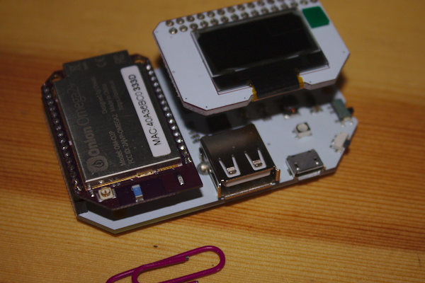
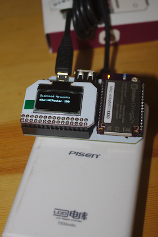

I am a sucker for SBCs (Single Board Computers) and when the Onion Omega2 was on Kickstarter I just couldn't help myself. A 5USD Linux computer?!? It was too much to resist. On my order I got an Omega2+ (Ok, 9USD but with more memory), an expansion dock and a couple of boards. In this project we are going to use an Omega2+ plugged in to the Expansion dock with an OLED board on it. Here is the setup (and yes, that is a normal sized paperclip, this thing really is that small!):

In the photo you can see the Omega2 on the left side (with the MAC address sticker on it), the USB connection (for adding webcams, etc.) and the mini-USB port (where you connect to a power supply). To get a full introduction to the Omega2 check out the excellent documentation on the website here.
Since getting this beast I have gone through the setup per the documentation, played a bit with using the OLED through the command line and done some basic play using the OLED with python scripts. If you are interested in just playing with the OLED using python, check out the OLED documentation here.
The Onion guys have done a great job getting their documentation online but another thing they do is to send out periodic emails with tips on how to use the device. Recently the email contained a command line command that will use the Omega2's wifi to poll nearby wifi networks and give you information about them. My knee jerk - I bet I could put that in a python script and have it output the polling data to the OLED. That is what this project is all about.
I will assume you know how (after reading the above linked documentation) to SSH into your Omega2 and login. The command for getting the wifi antenna on the Omega to poll local wifi networks is:
ubus call onion wifi-scan "{'device':'ra0'}"
Just enter that and you will get a huge list of wifi information, something like this:
{ "results":
[
{ "channel": "8", "ssid": "Onion HQ", "bssid": "40:a3:6b:c0:29:70", "authentication": "AES", "encryption": "WPA2PSK", "signalStrength": "100", "wirelessMode": "11b/g/n", "ext-ch": "NONE" },
{ "channel": "6", "ssid": "flattop", "bssid": "40:a3:6b:c0:29:c2", "authentication": "TKIPAES", "encryption": "WPA1PSKWPA2PSK", "signalStrength": "47", "wirelessMode": "11b/g/n", "ext-ch": "NONE" }
]
}
Now that mess is what is called a JSON object, it isn't really a python dictionary (I know it looks like one, treating it like one stymied me for a while) but it can be read into a python dictionary with a little bit of code.
Looking at the JSON object returned, my thought was to get my Omega2 to scan wifi networks and output the name of the network and the signal strength to the OLED monitor. This will require a few steps:
It turns out the output was the most fiddly part (after figuring out how to get the JSON object into a python dictionary).
import json
import os
from OmegaExpansion import oledExp
from time import sleep as sleep
oledExp.driverInit()
oledExp.setTextColumns()
oledExp.clear()
while True:
oledExp.clear()
oledExp.setCursor(1,0)
oledExp.write('Scanning networks')
os.system("ubus call onion wifi-scan \"{\'device\':\'ra0\'}\" > wifis.json")
with open('./wifis.json','r') as wifis:
wifilist = json.load(wifis)
oledExp.setCursor(3,0)
for i in wifilist['results']:
if i['ssid'] == 'myRouter':
output = i['ssid']+' '+i['signalStrength']
oledExp.write(output)
sleep(2)
So, not too difficult. First let me walk through the code then offer a few caveats.
import json
import os
Both of these modules are in the Python Standard Library, nothing fancy needed to use them other than to import them. Keep in mind when you import like this you will need to call your methods using the "module name.method" syntax:
os.system(<some command you would normally issue at the command line>)
The Omega2 does not come ready to drive the OLED board, if you followed the link above on how to use the OLED board with Python then you installed the OmegaExpansion module already, if not but you want to run this code on your Omega - go install it now.
from OmegaExpansion import oledExp
from time import sleep as sleep
Importing the oledExp module gives us all the methods we need to drive the OLED board. The time module has a ton of useful methods but we only really need sleep - why get the whole module when you only need one method?
Next we need to initialize the OLED and set it up to take input from our script.
oledExp.driverInit()
oledExp.setTextColumns()
oledExp.clear()
I should point out (since I got tripped up) that the OmegaExpansion module apparently only works with Python2.x, I tried running it with Python3 and no go.
Now the meat of the script.
while True:
oledExp.clear()
oledExp.setCursor(1,0)
oledExp.write('Scanning networks')
os.system("ubus call onion wifi-scan \"{\'device\':\'ra0\'}\" > wifis.json")
The os.system call sends our command to the operating system of the Omega2. You will notice a number of backslashes in that call - python (and all computer languages) is picky about pairing up quotes. If you don't put those backslashes in there then python will think you are closing prior quotation marks. But we want to pass these quotes into the command line command - hence the "escaping" (by means of the backslashes) of the quotes inside the os.system call.
with open('./wifis.json','r') as wifis:
wifilist = json.load(wifis)
There may be a way to translate that JSON object returned by the ubus call directly into a dictionary but I couldn't find it. Reading text files in python is easy though and translating JSON objects stored as text is just as easy with the json module. Thus I sent the output of the ubus command to a text file (the "> wifis.json" part of the above os.system call) and then read it in with this section. The json.load(wifis) call simply gets that text file and interprets it as a JSON object, making it accessible to the python script as a dictionary.
oledExp.setCursor(3,0)
for i in wifilist['results']:
if i['ssid'] == 'myRouter':
output = i['ssid']+' '+i['signalStrength']
oledExp.write(output)
I knew the ssid of my router and decided what I really wanted this device to do was tell me how good the signal from my router was wherever the device happened to be. You can simply change the if statement to whatever your router SSID is in order to make this work for you.
Dictionaries are great - they come in key:value pairs so you can find whatever data you want in there by just asking for the key. In this case we want to look at the 'ssid' key in the dictionary that is 'myRouter'. It is that object in the dictionary that we want to inspect and get the signal strength for, the other pieces of the dictionary are uninteresting to us right now.
The oledExp.write method didn't handle weird python type strings so I decided to assign the output I needed to the variable "output". When I tell oledExp.write to output that variable - all is golden!
sleep(2)
Ah, glorious sleep! The sleep method takes an argument in seconds so sleep(2) will pause execution of our script for 2 seconds. I must admit the first version of the script didn't use sleep (like much of my life) and it became very hard to understand (also like much of my life) as the screen was writing and rewriting too fast to read. Add a little sleep and Voila - a wifi signal strength scanner!
Finally I plugged my Omega2 into a cell phone battery charger and now I can walk around the house to check signal strength of our wifi (and amuse my daughter).
And here is the final scanner:

Since the ubus command returns info on all wifi networks detected you could have the OLED roll the output and have each wifi network printed in turn. Alternatively, what about putting the data out into a CSV file, pair this with a GPS module (haven't played with one of those - will it work with the OLED?) you could make a map of wifi signal strengths. There has got to be other interesting things that ubus command can do - I haven't found documentation for it yet though. For now keep hacking!
Soli Deo Gloria!